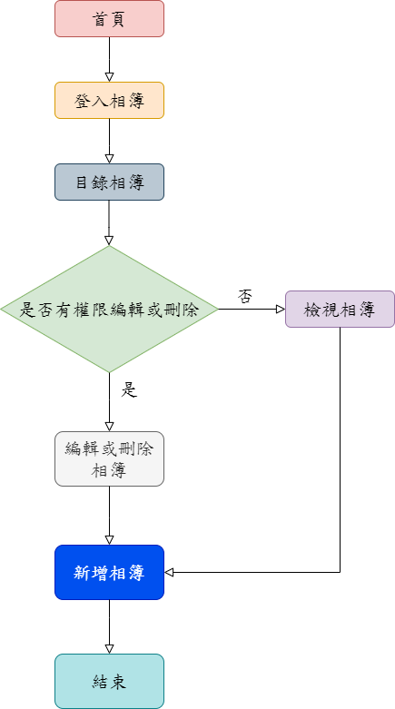
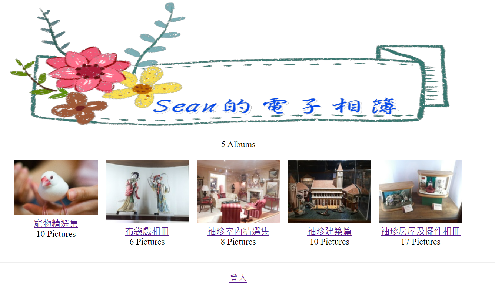
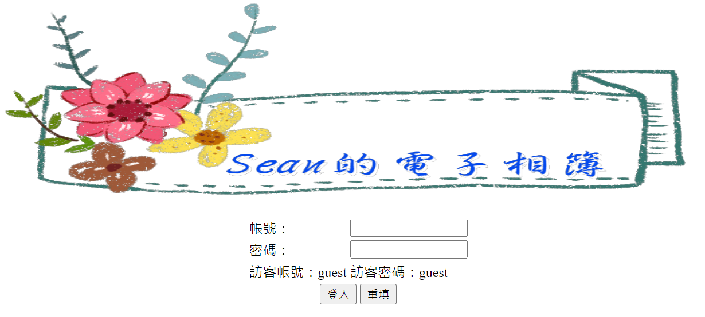
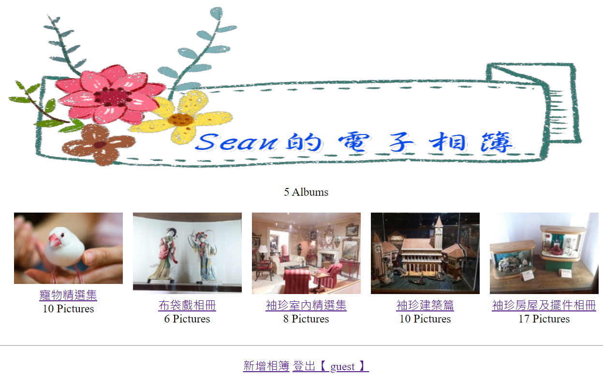
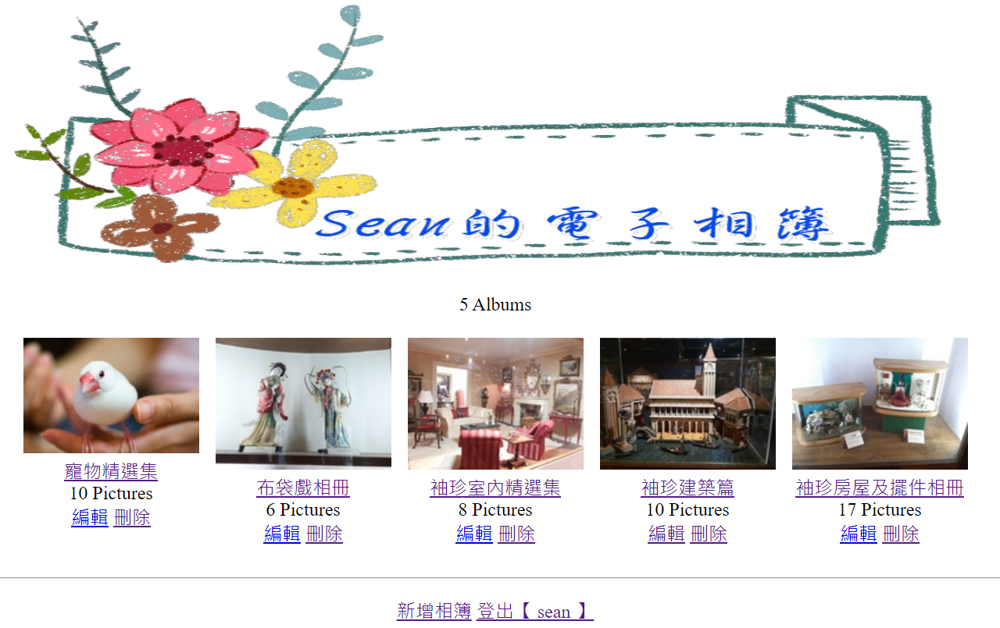
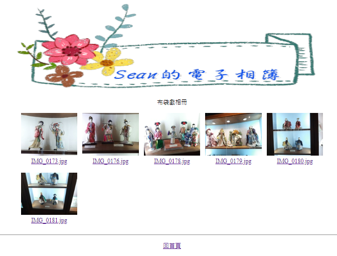
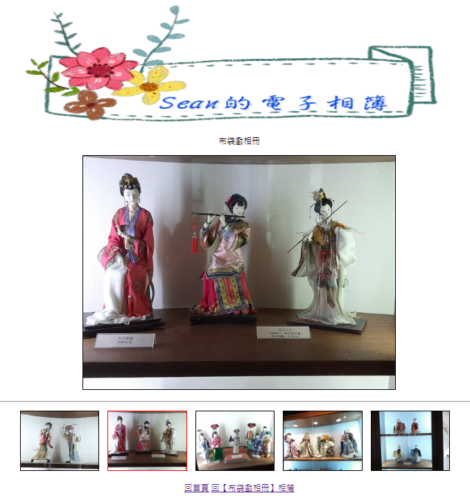
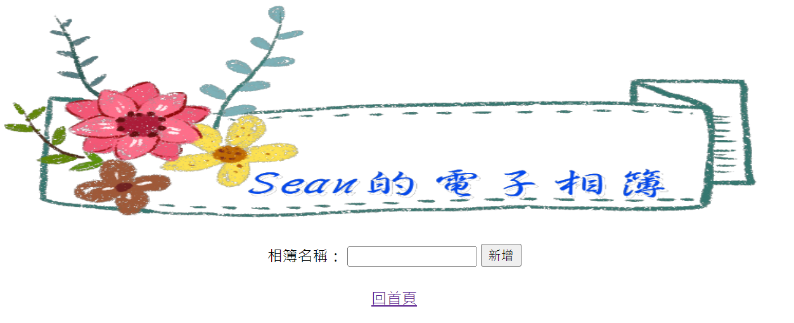
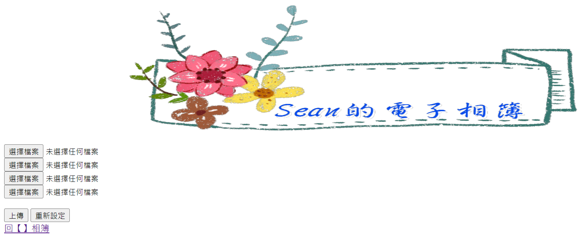

電子相簿為目前最流行的網頁應用之一，主要功能為給予使用者一個空間提供建立相簿與上傳照片與人分享。電子相簿主要由許多不同主題的相簿組成，其中各個相簿又由許多照片所組成。主要功能：
建立相簿:建立一個相簿或活動主題，提供使用者瀏覽相關照片。
上傳照片:在已建立的相簿中，提供介面讓使用者將照片上傳到該相簿。
瀏覽照片:提供介面給使用者點選相簿並觀看其中的照片。
流程圖 本系統主要分為以下4個部分:訊號前處理、波形處理、頻域轉換、運算生理參數。
顯示相簿封面、相簿名稱、相片數目及相簿數目等。
 相簿登入畫面輸入帳號密碼按登入(訪客可以用guest登入即可)
 登入後畫面點按像簿封面或相簿名稱可以進入相簿，相簿的擁有者可以編輯或刪除相簿，也可按超連結{新增相簿}增加電子相簿的豐富。
 布袋戲相冊
顯示相簿名稱、相片縮圖等，點按圖片可以檢視該圖片
 檢視圖片  編輯相簿名稱  上傳相片  123